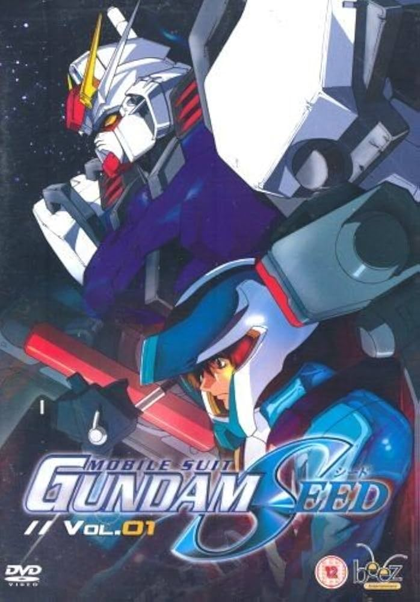
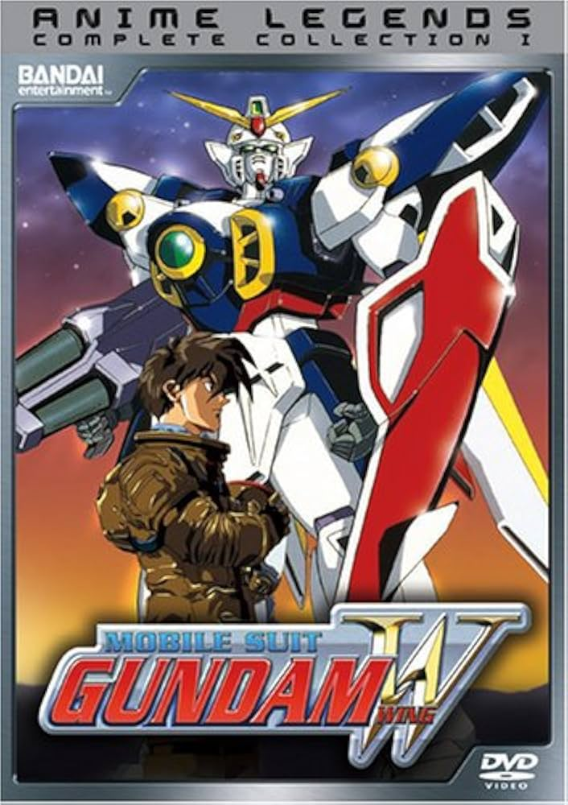
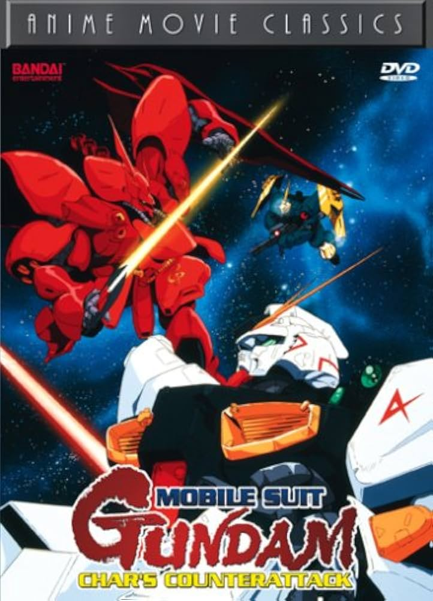

O que é Gundam?
Gundam é uma franquia japonesa criada em 1979 pela Sunrise. A série apresenta gigantescos robôs de combate chamados Mobile Suits, pilotados por humanos em meio a guerras espaciais e conflitos políticos.
Mais do que ação, Gundam explora temas como guerra, paz, identidade e o custo humano dos conflitos armados.
Séries Famosas
Mobile Suit Gundam (0079) — a série original que começou tudo.
Zeta Gundam — considerada a mais sombria e madura da franquia.
Gundam Wing — a série que popularizou Gundam no Ocidente.
Gundam 00 — ambientada no século 24, com foco em intervenção armada.
Mobile Suits Icônicos
RX-78-2 Gundam — o símbolo da franquia, pilotado por Amuro Ray.
Zaku II — o inimigo clássico, tão icônico quanto o herói.
Wing Zero — elegante e destrutivo, pilotado por Heero Yuy.
Imagens


